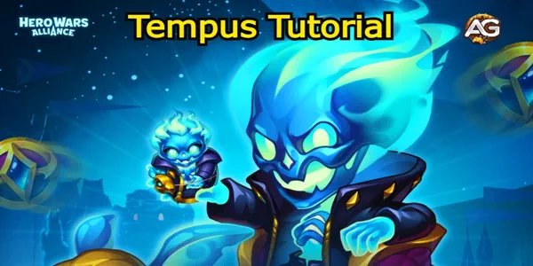
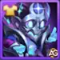
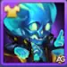
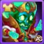
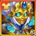
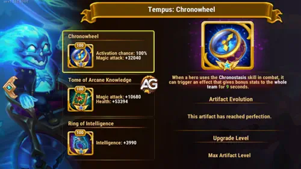
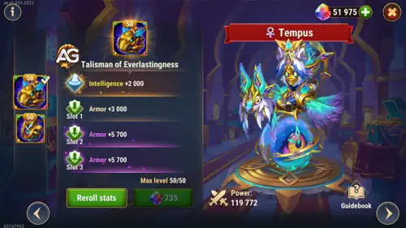
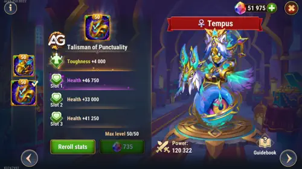

No universo em constante expansão de Hero Wars Alliance, um novo Guardião emergiu: Tempus, um mestre da manipulação do tempo. Nascido do tédio da vida eterna, Tempus escolheu juntar-se às fileiras da facção Caminho da Eternidade, trazendo suas habilidades únicas de alteração do tempo para ajudar seus companheiros Guardiões no combate.
Como um Herói de Suporte que atua na Linha do Meio, Tempus é especializado em controlar o fluxo da batalha, enfraquecer inimigos e aumentar o poder de sua equipe, especialmente os usuários de magia.
Neste guia, exploraremos as habilidades, artefatos e sinergias de Tempus, oferecendo dicas sobre como maximizar seu potencial em combate. Descubra Tempus, o novo herói de Hero Wars, mestre da manipulação do tempo! Confira suas habilidades únicas e dicas de como usá-lo para dominar suas batalhas.
Visão Geral das Estatísticas do Tempus
Tabela: Visão Geral das Estatísticas do Tempus
Função
Suporte
Facção
Caminho da Eternidade
Posição
Linha do Meio
Atributo Principal
Inteligência
Tipo de Dano
Mágico
Sinergias
Heróis do Caminho da Eternidade: Especialmente Iris, Phobos e também Xe'sha, Celeste
Lista de Níveis de Tempus - Hero Wars Alliance
Tabela: Lista de Níveis de Tempus - Hero Wars Alliance
Tier List 2025
Classificação
Tier List Geral de Herói:
S
Lista de Níveis da Hydra:
A

Ilustração de Tempus, Evento do jogo Hero Wars Alliance, desenvolvido pela Nexters.
Guia de Habilidades do Tempus
Tempus possui um conjunto de habilidades que dobram o tempo, podendo interromper as estratégias inimigas enquanto fortalece sua equipe. Aqui está uma análise de suas habilidades principais e como usá-las de forma eficaz:
1. Cronostase
Descrição da Habilidade: Tempus para o tempo para todos os Heróis inimigos, congelando seus movimentos, uso de habilidades e esquiva. Durante esse tempo, a Armadura e a Defesa Mágica dos inimigos são reduzidas, e o tempo de recarga de todas as suas habilidades é interrompido. Essa habilidade também prolonga a duração de todas as Maldições e Debuffs que afetam os inimigos.
Estratégia: Cronostase é uma habilidade que muda o rumo da batalha. Ao congelar as ações e defesas dos inimigos, Tempus cria uma janela de oportunidade para os magos da sua equipe liberarem seus ataques mais poderosos sem medo de retaliação. Use essa habilidade em momentos cruciais, especialmente quando os inimigos estiverem prestes a usar habilidades de alto impacto, para neutralizar completamente a ameaça. Combinada com heróis como Iris e Phobos, ela permite explorar inimigos enfraquecidos e maximizar o dano.
2. Definhamento
Descrição da Habilidade: Tempus enfraquece temporariamente inimigos distantes à sua frente, reduzindo seu Ataque Físico e sua Saúde máxima.
Estratégia: Definhamento é particularmente eficaz contra atacantes físicos e inimigos da linha de frente. Essa habilidade permite que Tempus mitigue o dano de oponentes que dependem de Ataque Físico, além de reduzir sua Saúde máxima. Use isso para enfraquecer tanques ou causadores de dano inimigos, dando à sua equipe uma vantagem clara. Isso é especialmente eficaz quando Tempus está posicionado contra equipes com forte poder de dano físico.
3. Anomalia Temporal
Descrição da Habilidade: Tempus envia o Herói inimigo com a maior Penetração de Armadura para a Anomalia Temporal, onde ele é desacelerado, perde energia e sofre dano mágico contínuo ao longo do tempo.
Estratégia: Anomalia Temporal mira no inimigo com a maior Penetração de Armadura, tornando-o um contra-ataque ideal contra oponentes projetados para destruir as defesas da sua equipe. Ao isolar e enfraquecer esse alvo, Tempus garante que os tanques e heróis da linha de frente de sua equipe permaneçam protegidos por mais tempo. Além disso, o dano mágico ao longo do tempo pode ajudar a desgastar inimigos de alta prioridade.
4. Paradoxo Temporal
Descrição da Habilidade: Tempus invoca um grande relógio no centro do campo de batalha, criando uma área de efeito (AoE) que desacelera os inimigos enquanto acelera os aliados dentro de seu alcance.
Estratégia: Paradoxo Temporal é a habilidade suprema de controle de Tempus. A área de efeito afeta tanto inimigos quanto aliados, desacelerando os inimigos enquanto acelera a equipe de Tempus. Isso pode ser usado para controlar o ritmo da batalha, permitindo que seus aliados rapidamente superem e derrotem os oponentes. Em batalhas acirradas, a habilidade de manipular o tempo para ambos os lados pode ser a diferença entre a vitória e a derrota. Use o Paradoxo Temporal para impedir que os inimigos alcancem objetivos-chave ou garantir que sua equipe execute ataques com precisão letal.
Dicas para Jogar com Tempus
O Timing é Tudo: Tempus se destaca no controle do campo de batalha, por isso usar suas habilidades nos momentos certos é crucial. Não tenha pressa em usar Cronostase; espere até que os inimigos estejam prestes a lançar seus ataques ou quando os debuffs principais estiverem em vigor para maximizar sua eficácia.
Proteja seus Magos: Tempus é mais eficaz quando combinado com heróis baseados em magia. Use suas habilidades de manipulação do tempo para proteger magos vulneráveis de ataques físicos e dar-lhes tempo para liberar seus feitiços mais poderosos.
Mire em Oponentes Chave: Use Anomalia Temporal para neutralizar alvos prioritários como heróis inimigos com alta Penetração de Armadura. Ao remover essas ameaças temporariamente do campo de batalha, você dá à sua equipe uma vantagem significativa.
Maximize os Efeitos de Área: Paradoxo Temporal afeta tanto sua equipe quanto os inimigos, então o posicionamento é fundamental. Certifique-se de que sua equipe esteja dentro do alcance do relógio para se beneficiar do aumento de velocidade enquanto prende os inimigos em seu efeito de desaceleração.
Sinergize com Heróis de Debuff: Tempus brilha quando emparelhado com heróis que aplicam debuffs e maldições. Heróis como Iris e Phobos verão seus debuffs prolongados e amplificados por Cronostase, permitindo que você mantenha os inimigos enfraquecidos por mais tempo.
Melhor Skin para Tempus em Hero Wars Alliance
A evolução das skins de Tempus é crucial para maximizar seu papel de suporte com controle temporal. Cada skin oferece vantagens distintas, desde dano mágico devastador até melhor sobrevivência e versatilidade em diferentes cenários de batalha.
Skin Cibernética
Ataque Mágico +10.650
Prioridade de Evolução:1ª – Muito Alta – Esta skin fornece o máximo aumento direto no ataque mágico, tornando-a igual em produção de dano bruto à Skin Estelar. A Skin Cibernética amplifica as habilidades de controle de Tempus, como Cronostase e Anomalia Temporal, permitindo que ele cause dano devastador enquanto controla o campo de batalha. Esta deve ser sua principal prioridade para máximo potencial de suporte ofensivo.

Skin Estelar
Ataque Mágico +10.650
Prioridade de Evolução:1ª – Muito Alta – Esta skin fornece um aumento direto e substancial no ataque mágico, oferecendo produção de dano bruto idêntica à Skin Cibernética. Ambas as skins são igualmente valiosas para maximizar o potencial ofensivo e impacto de suporte de Tempus, especialmente quando emparelhado com magos de explosão como Íris ou Polaris. Escolha com base em preferência estética entre estas opções de topo.

Skin Padrão
Inteligência +1.365
Prioridade de Evolução:2ª – Alta – A inteligência aumenta o ataque mágico (+4.095), a defesa mágica (+1.365) e contribui ligeiramente para o ataque físico (+1.365). Embora ofereça menos dano bruto do que as Skins Cibernética ou Estelar, melhora os aspectos ofensivos e defensivos do conjunto de habilidades de Tempus, sendo uma forte escolha secundária. Ela aprimora todas as habilidades e ajuda na sua sobrevivência em batalhas contra oponentes focados em dano mágico.

Skin Lunar
Vida +106.645
Prioridade de Evolução:3ª – Média-Alta – Como herói da linha do meio, Tempus pode ser exposto a dano em área (AoE) e explosivo. O aumento de vida dessa skin melhora sua sobrevivência, garantindo que ele consiga aplicar controle de grupo e efeitos negativos de forma consistente. Priorize esta skin se Tempus estiver sendo eliminado muito cedo nas lutas.

Skin+ Angelical
Armadura +21.300
Prioridade de Evolução:4ª – Média – A armadura ajuda a mitigar dano físico, o que é útil contra heróis como Dante ou Keira. No entanto, como Tempus geralmente não é alvo de ataques físicos de alvo único e já atua na linha do meio, esta skin é situacional e oferece o menor valor geral.
Prioridade de Evolução de Artefatos de Tempus em Hero Wars Alliance

Artefatos de Tempus em Hero Wars Alliance.
Tempus utiliza três artefatos poderosos que aprimoram seu dano mágico, sobrevivência e capacidades de suporte para o time. Cada artefato fornece vantagens distintas que funcionam juntas para maximizar sua efetividade em estratégias de suporte com controle temporal.
Cronorrodas (Arma)
Ataque Mágico +32.040
Prioridade de Evolução:1ª – Muito Alta – Este é o artefato principal de Tempus e deve ser sua principal prioridade. Cronorrodas fornece o maior bônus direto de ataque mágico (+32.040), amplificando significativamente o dano de suas habilidades Cronostase e Anomalia Temporal. Além disso, dispara com a habilidade suprema de Tempus, concedendo bônus poderosos de stats para todo o seu time por 9 segundos, tornando-o inestimável para ofensivas coordenadas e sinergias de equipe.
Tomo do Conhecimento Arcano (Livro)
Ataque Mágico +10.680 / Vida +53.394
Prioridade de Evolução:2ª – Alta – Este artefato oferece excelente equilíbrio entre capacidades ofensivas e defensivas. O aumento de ataque mágico (+10.680) fortalece sua produção de dano, enquanto o aumento substancial de vida (+53.394) melhora sua sobrevivência na linha do meio. Essa combinação garante que Tempus mantenha presença em batalhas prolongadas enquanto aplica consistentemente suas habilidades de controle sem ser eliminado prematuramente.
Anel de Inteligência (Anel)
Inteligência +3.990
Prioridade de Evolução:3ª – Média – A Inteligência fornece escalonamento versátil, convertendo +3.990 de Inteligência em ataque mágico (+11.970), defesa mágica (+3.990) e ataque físico (+3.990). Embora entregue menos dano mágico bruto do que Cronorrodas ou Tomo do Conhecimento Arcano, melhora a sustentabilidade geral e adiciona benefícios multi-stats. Priorize este artefato após os dois primeiros para otimização completa do kit de suporte de Tempus.
Prioridade de Evolução de Glifos de Tempus em Hero Wars Alliance
A estratégia de evolução de glifos de Tempus se concentra em maximizar sua sobrevivência e produção mágica para manter seu papel de suporte com controle temporal. Cada glifo fornece vantagens distintas que aprimoram sua efetividade em batalha com base em suas necessidades defensivas e ofensivas.
Vida
Estatísticas no Nível 80: Vida +122.800
Prioridade de Evolução:1ª – Muito Alta – Vida é sua prioridade absoluta máxima. Como herói de suporte da linha do meio, Tempus requer durabilidade excepcional para manter presença no campo de batalha ao longo de batalhas prolongadas. O aumento substancial de +122.800 de vida garante que ele consiga aplicar consistentemente suas habilidades de controle de grupo, absorver dano em área (AoE) e sobreviver a ataques explosivos sem ser eliminado prematuramente. Esta é a base de sua efetividade como unidade de suporte.
Ataque Mágico
Estatísticas no Nível 80: Ataque Mágico +12.850
Prioridade de Evolução:1ª – Muito Alta – Ataque Mágico é igualmente crítico para maximizar a capacidade ofensiva de Tempus. O bônus de +12.850 amplifica diretamente o dano de Cronostase, Anomalia Temporal e Paradoxo do Tempo, transformando-o de um puro suporte de controle em um dealer de dano formidável. Isso permite que ele capitalize nas janelas que cria com suas habilidades de controle de grupo, infligindo dano significativo enquanto controla o campo de batalha.
Defesa Mágica
Estatísticas no Nível 80: Defesa Mágica +12.850
Prioridade de Evolução:2ª – Alta – Defesa Mágica é sua segunda prioridade, fornecendo mitigação crucial contra dano mágico de magos inimigos e heróis de explosão. O bônus de +12.850 ajuda Tempus a resistir a ameaças mágicas comuns em times competitivos. Enquanto seus companheiros como Morrigan fornecem cura e suporte, reduzir o dano mágico recebido se traduz diretamente em menores requisitos de cura e presença sustentada mais longa em combate.
Armadura
Estatísticas no Nível 80: Armadura +12.850
Prioridade de Evolução:3ª – Média-Alta – Armadura fornece mitigação de dano físico com +12.850, o que é valioso situacionalmente contra times focados em dano físico. No entanto, a posição de Tempus na linha do meio significa que ele é alvo com menos frequência de ataques físicos de alvo único comparado a heróis da linha de frente. Priorize este glifo após Vida, Ataque Mágico e Defesa Mágica, principalmente para times enfrentando dealers de dano físico forte como Dante ou Keira.
Prioridade de Evolução:4ª – Média – Inteligência fornece escalonamento versátil multi-stats, convertendo +2.110 de Inteligência em bônus ofensivos e defensivos. Embora ofereça escalonamento decente, suas contribuições de stats individuais são menores do que opções de glifos dedicados. Priorize Inteligência por último, pois o glifo de +12.850 Ataque Mágico puro entrega valor ofensivo superior, e glifos defensivos dedicados fornecem proteção mais focada.
Sinergias
Tempus trabalha excepcionalmente bem com heróis do Caminho da Eternidade, mas é particularmente eficaz quando combinado com:
Iris: As habilidades de debuff de Iris complementam a manipulação do tempo de Tempus. Quando Tempus usa sua habilidade Cronostase, ela aumenta a duração dos debuffs de Iris.
Phobos: A habilidade Maldição de Phobos, que reduz a eficácia dos inimigos, torna-se ainda mais mortal quando combinada com as habilidades de Tempus que desaceleram e enfraquecem os inimigos.
Xe'Sha e Celeste: Esses poderosos magos se beneficiam das habilidades de manipulação do tempo de Tempus, permitindo que eles liberem magias devastadoras enquanto os inimigos estão desacelerados e incapazes de se defender.
Morrigan – Apoia Tempus com cura e aumentos de dano, ajudando a mantê-lo vivo na linha de frente.
Nebula – Potencializa o ataque mágico de Tempus com seus buffs, tornando-o ainda mais letal.
Dante – Protege Tempus de grandes danos explosivos enquanto ajuda a controlar o movimento dos inimigos.
Guia de Talismãs do Tempus - Hero Wars Alliance
Tempus possui 2 talismãs, e você deve decidir qual equipar antes de entrar em combate. Ao contrário das aparências, onde você recebe o bônus independentemente de qual está ativa, apenas os atributos do talismã atualmente equipado são aplicados durante a batalha. Escolher o talismã certo pode fazer uma grande diferença, dependendo dos inimigos enfrentados e do papel que você deseja que o Tempus desempenhe.
Talismã da Eternidade

Talismã da Eternidade, Hero Wars Alliance.
Slot principal: Inteligência +2.000
Cada ponto de Inteligência concede:
+3 de Ataque Mágico
+1 de Defesa Mágica
+1 de Ataque Físico (se Inteligência for o atributo principal do herói)
Bônus total dos slots de rolagem: Armadura +19.800 (soma de três slots: 3 × 6.600)
Este talismã é ideal quando se deseja aumentar o poder mágico do Tempus e obter resistência física adicional através da armadura. Excelente escolha contra equipes de dano físico.
Talismã da Pontualidade

Talismã da Pontualidade, Hero Wars Alliance.
Slot principal: Tenacidade +4.000
Efeito da Tenacidade:
Reduz todo o dano recebido quando a vida do Tempus estiver baixa
Aplica-se a todos os tipos de dano (físico, mágico e puro), exceto perda de vida causada por habilidades aliadas
Fórmula: (Tenacidade / (Tenacidade + atributo principal do inimigo)) × 100%
Bônus total dos slots de rolagem: Vida +181.500 (soma de três slots: 3 × 60.500)
Este talismã aumenta muito a sobrevivência do Tempus em momentos finais da batalha ou contra dano explosivo. Uma opção sólida para estratégias defensivas.
Tempus é um herói de suporte versátil e poderoso, cuja capacidade de manipular o tempo pode mudar completamente a dinâmica de uma batalha. Seu conjunto de habilidades único o torna inestimável em equipes centradas em usuários de magia e estratégias de debuff. Ao desacelerar os inimigos, enfraquecer suas defesas e aumentar o poder de seus aliados, Tempus oferece profundidade estratégica e uma vantagem tática. Para jogadores que buscam dominar a arte do controle no campo de batalha, Tempus é um herói essencial em Hero Wars Alliance.
Sugestões de Vídeo:
Vídeo: Descubra os Melhores Times com Tempus em Hero Wars Alliance.
Vídeo: Novo Herói Tempus Dicas e Habilidades Reveladas! Hero Wars Alliance.
Explore novas habilidades com nossos heróis em destaque!
Você gostou das nossas dicas sobre o personagem Tempus? Há algo que não entendeu ou gostaria de sugerir mudanças? Convidamos você a se juntar à nossa sessão de comentários na página do Alexandre Games Blog. Não hesite em expressar sua opinião, clarificar suas dúvidas e compartilhar sua sugestões. Clique no botão abaixo para começar:


 Hero Wars") Como Derrotar Cada Herói - Hero Wars
Como Derrotar Cada Herói - Hero Wars
 Tier List Hero Wars JvJ
Tier List Hero Wars JvJ